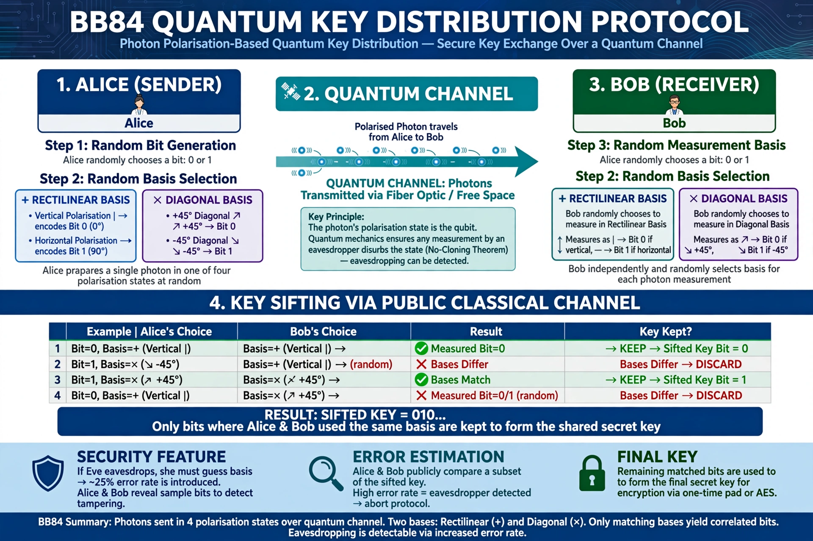

Quantum cryptography

Quantum cryptography is the science of exploiting quantum mechanical properties to perform cryptographic tasks. The best-known example is quantum key distribution (QKD), which enables two parties to produce a shared random secret key with security guaranteed by the laws of physics: any attempt to eavesdrop on the quantum transmission necessarily disturbs it, revealing the eavesdropper's presence. Quantum cryptography should be distinguished from post-quantum cryptography, which refers to conventional algorithms believed to be secure against attacks by quantum computers.
| Main application | Quantum key distribution (QKD) |
|---|---|
| Key protocols | BB84 (1984); E91 (1991) |
| Physical basis | No-cloning theorem; measurement disturbance |
Quantum key distribution
The first QKD protocol, BB84, was proposed by Charles Bennett and Gilles Brassard in 1984. Alice sends photons polarised in randomly chosen bases; Bob measures them in randomly chosen bases; afterwards they publicly compare bases (without revealing results) and keep only the matching cases as raw key material. Because an unknown quantum state cannot be copied — the no-cloning theorem — an eavesdropper cannot intercept the photons without introducing detectable errors. In 1991 Artur Ekert proposed the E91 protocol, which uses entangled photon pairs and tests of Bell inequalities to detect interception. After error correction and privacy amplification, the parties obtain a key usable, for example, with a one-time pad.
Implementation and limits
QKD has been demonstrated over optical-fibre networks in several cities and over a satellite link by China's Micius satellite in 2017. Practical systems face distance limits set by photon loss, the need for an authenticated classical channel, and side-channel attacks on real devices, several of which have been demonstrated against commercial systems; device-independent QKD aims to remove trust in the hardware altogether. Security agencies in some countries have expressed reservations about QKD for general use, favouring post-quantum algorithms, while QKD continues to be deployed in specialised high-security networks.